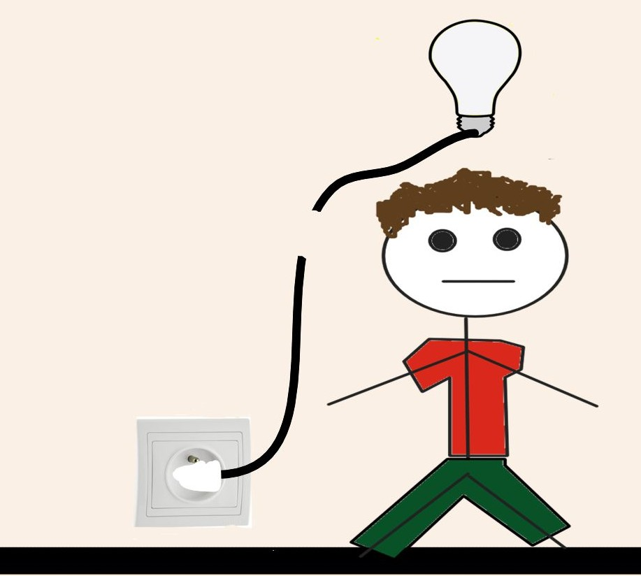
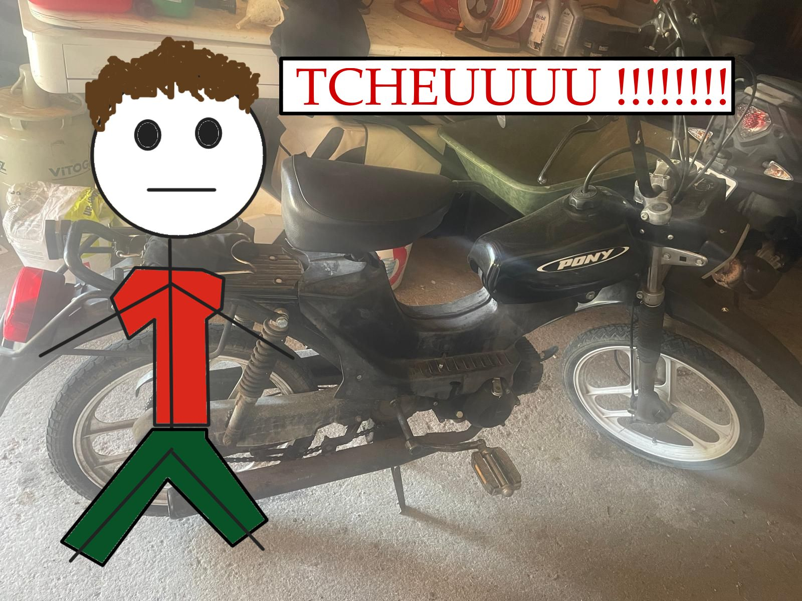
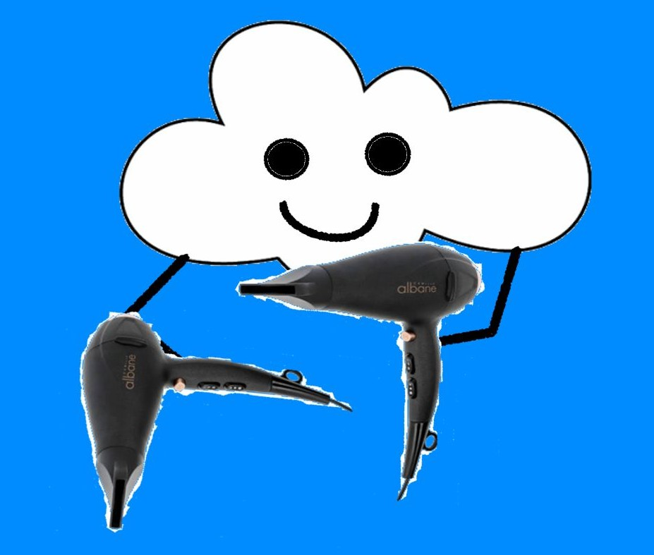
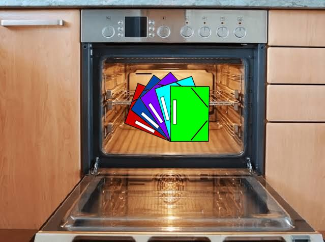
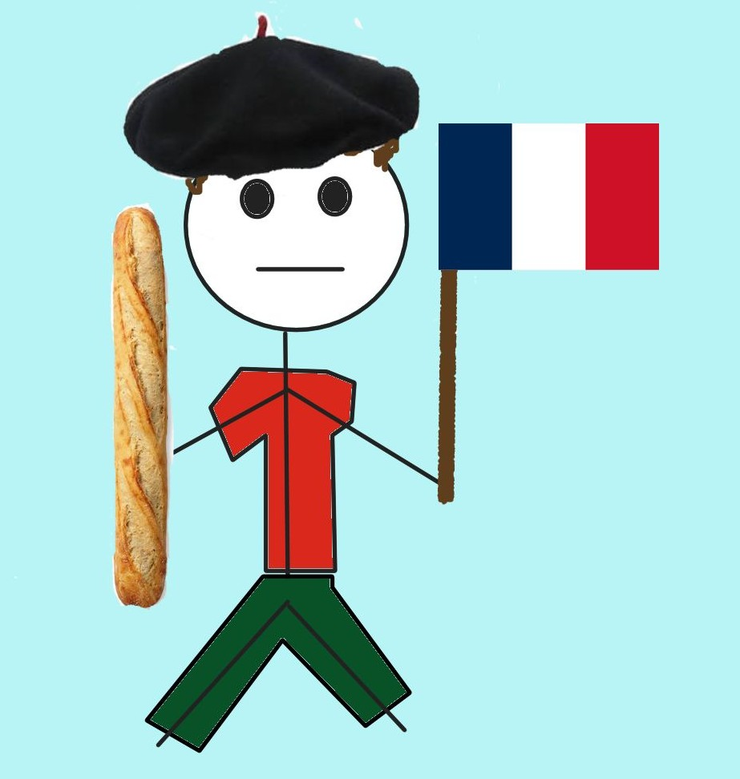
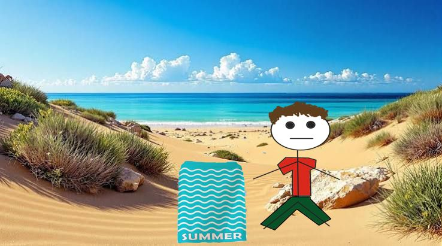
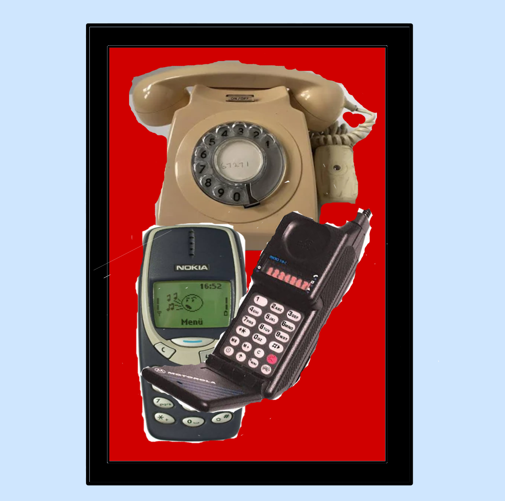
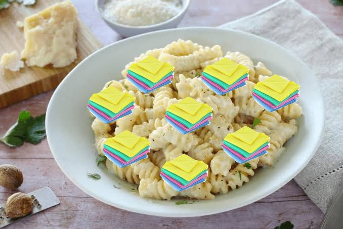
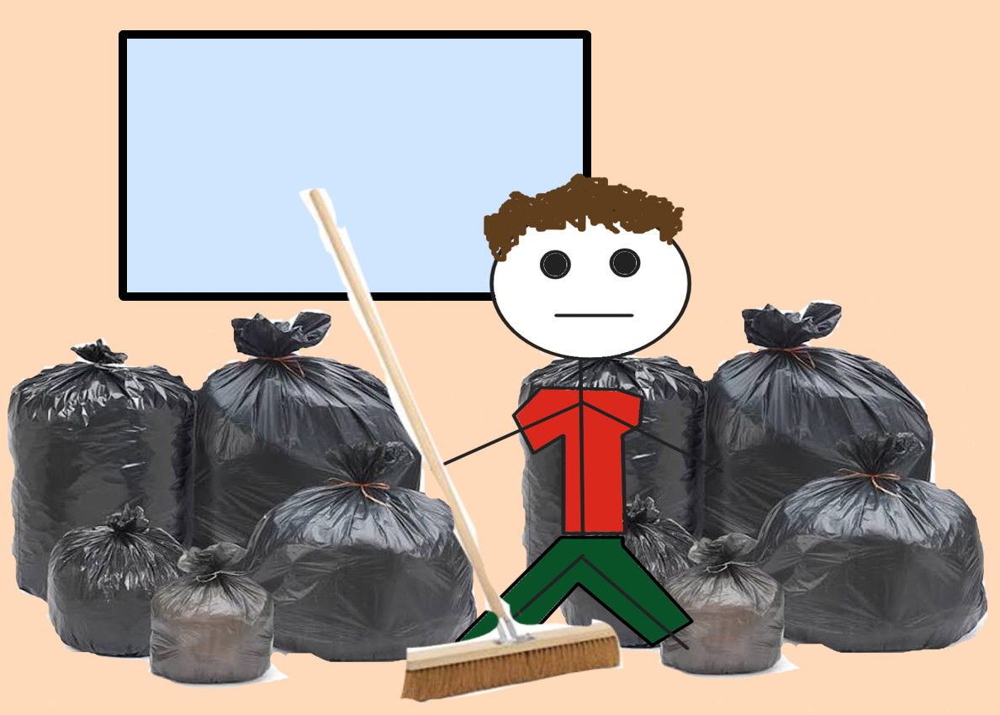
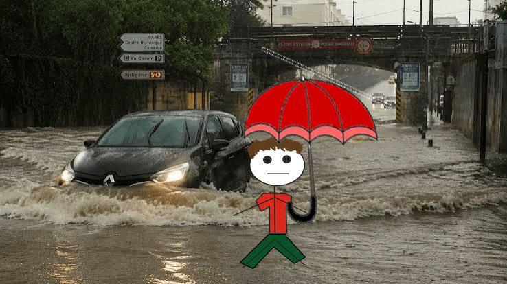

Dictionnaire
Lexique de secours pour se faire comprendre en terre romande
Bobet
Nom masculin
Personne ayant des capacités intellectuelles limitées
Synonyme : un idiot
3/10 de chances de l'entendre si vous allez en Romandie
MAIS 10/10 si vous êtes le bobet du village

Boguet
Nom masculin
Véhicule à deux ou trois roues de petite cylindrée
Synonyme : un cyclomoteur
4/10 de chances de l'entendre si vous allez en Romandie
MAIS 9/10 si vous décidez de quitter la civilisation des villes suisses

Être tablar
Expression verbale
Personne ayant perdu le sens de la raison
Synonyme : un fou
2/10 de chances de l'entendre si vous allez en Romandie
MAIS 8/10 si vous êtes le bobet du village

Foehn
Nom masculin
Appareil électrique qui souffle de l'air chaud et permet de sécher les cheveux
Synonyme : un sèche-cheveux
4/10 de chances de l'entendre si vous allez en Romandie
MAIS 0/10 si vous êtes chauve

Fourre
Nom féminin
Couverture cartonnée servant à insérer les pièces d'un document
Synonyme : une chemise (cartonnée)
2/10 de chances de l'entendre si vous allez en Romandie
MAIS 8/10 si vous travaillez dans un bureau

Frouze
Nom masculin
Personne habitant en France ou originaire de France
Synonyme : un français
9/10 de chances de l'entendre si vous allez en Romandie
MAIS 1/10 si vous restez entre frouzes

Linge
Nom masculin
Pièce de tissu éponge ou de toile permettant de s'essuyer après s'être lavé ou baigné
Synonyme : une serviette
6/10 de chancesde l'entendre si vous allez en Romandie
MAIS 11/10 si vous êtes quelqu'un de vraiment très propre

Natel
Nom masculin (marque déposée)
Appareil électronique de télécommunication portatif destiné à la téléphonie mobile
Synonyme : un téléphone portable
9/10 de chances de l'entendre si vous allez en Romandie
MAIS 2/10 si vous passez l'intégralité de votre temps en maison de retraite

Patte
Nom féminin
Morceau de tissu ayant de multiples fonctions dans le ménage : épousseter, essuyer une surface
Synonyme : une lavette
3/10 de chances de l'entendre si vous allez en Romandie
MAIS 9/10 si vous allez manger dans un restaurant italien

Poutzer
Verbe transitif
Rendre un lieu propre
Synonyme : nettoyer
7/10 de chances de l'entendre si vous allez en Romandie
MAIS 11/10 si vous êtes encore une fois quelqu'un de vraiment très propre

Roiller
Verbe impersonnel
Action caractérisée par une quantité d'eau plus ou moins conséquente qui tombe du ciel
Synonyme : pleuvoir
6/10 de chances de l'entendre si vous allez en Romandie
MAIS 9/10 si vous allez à La Chaux-de-Fonds
